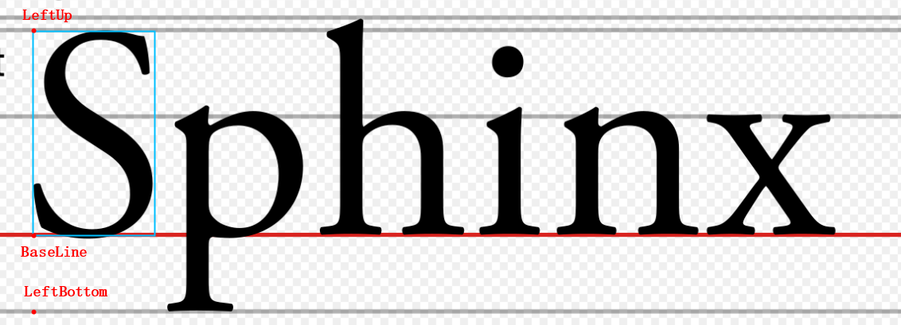

图片绘制几何图形和文字#
VisionFlow 提供了基本的几何图形和文字绘制接口，方便在图片上面渲染几何图形或者一些文字。
绘制几何图形#
VisionFlow 提供了绘制多种几何类型的函数，具体接口请参考 工具清单及详细流程图 中 Image绘制几何图形。 函数定义中的参数 thickness 表示线条粗线，如果为负数代表填充几何图形；
以下示例代码将会绘制一个填充的圆形：
#include <vector>
#include "visionflow/image/draw.hpp"
std::vector<int> color{255};
visionflow::Image image = visionflow::Image::Zeros(1, {100, 100});
visionflow::geometry::Circle2f circle{{50, 50}, 25};
visionflow::img::draw(image, circle, color, -1, visionflow::img::kLine8);
绘制文字#
接口定义请参考 工具清单及详细流程图 中 Image绘制文字。 函数定义中的参数 pos 表示要绘制文字的起始点；参数 pos_mode 为0表示基线base_line、为1表示左上角点、为2表示左下角点(详见下图)；
{kind=link}
- 参数 font_name 用于指定渲染文字时使用的字体名称：
Windows上可直接查看注册表中 计算机/HKEY_LOCAL_MACHINE/SOFTWARE/Microsoft/Windows NT/CurrentVersion/Fonts 表中的各个字体名称， 例如微软雅黑为 “Microsoft YaHei & Microsoft YaHei UI (TrueType)” ；
Linux上可通过 fc-list –brief 命令查看所有字体信息并传入 fullname 字段的字符串，例如某开源字体DejaVu的衬线版字体为 “DejaVu Serif” ；
- 如果 font_name 为空则会按顺序查找并使用常用的三种字体，并使用第一个找到的字体进行渲染，如果都没找到则会报错。
- Windows
Microsoft YaHei
Segoe UI
Microsoft JhengHei
- Linux
DejaVu Sans
DejaVu Sans Mono
Source Han Sans
渲染文字时如果选择的字体文件并不支持某个字符，则会使用 ‘?’ 代替并给出警告信息。
参数 font_height_pixel 用于描述渲染字体时的理想最大高度，对大多数字体而言是 ‘|’ 的长度；
参数 angle 表示整个字符串从起始点沿x轴正方向的旋转角度；
以下示例代码将会绘制一个字符串：
#include <vector>
#include "visionflow/image/draw.hpp"
std::vector<int> color{150};
visionflow::Image image = visionflow::Image::Zeros(1, {500, 500});
visionflow::geometry::Point2f pos{100, 100};
const std::string &text = "阿丘科技";
draw(image, text, color, pos);
// 改变旋转角度:angle 以及起始点和字符的相对位置:pos_mode
draw(image,
text,
color,
pos,
32,
visionflow::geometry::Radian::FromDegree(90),
"",
2);
将属性绘制到图片上#
接口定义请参考 visionflow::IRegion::draw_on() 和 visionflow::props::IRegionList::draw_on()。
- 对于每一个
visionflow::IRegion规定的区域，该函数会绘制三个元素： 一个多边形，表示区域本身，如同
visionflow::IRegion::polygon()所返回的；多边形的旋转外接矩形，旋转角度与
visionflow::IRegion::angle()所返回的一致；一个字符串，位于外接矩形旋转方向的左上角，内容为
visionflow::IRegion::name()和visionflow::IRegion::score()的值，用一个冒号连接，后者保留三位小数。
对于 visionflow::props::IRegionList，函数会将其中的每个区域分别绘制。
- 通过参数
visionflow::DrawOptionsoptions 可以控制绘制行为。默认构造的visionflow::DrawOptions对象给出了一些自适应的绘制行为，即： 随机使用以下六种颜色之一：红色、蓝色、绿色、黄色、洋红色、青色；
多边形的线条粗细根据图像的大小自适应，且最小是 2 个像素；
字符高度是线宽的 16 倍，且最小是 32 个像素；
使用上文所述的默认字体。
只接受一个 image 参数的函数重载将使用上述默认行为。